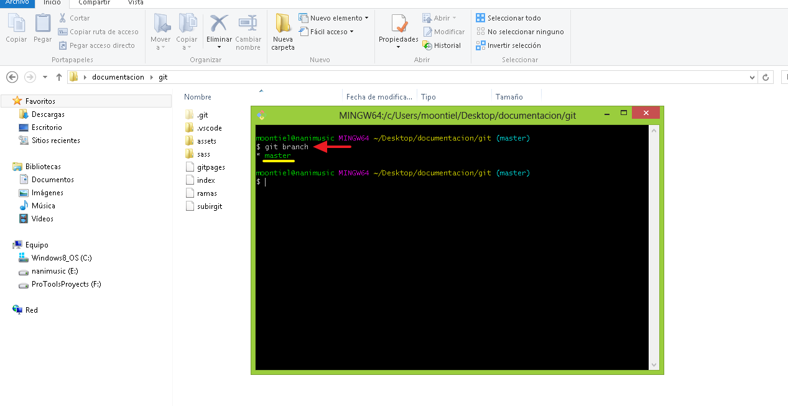
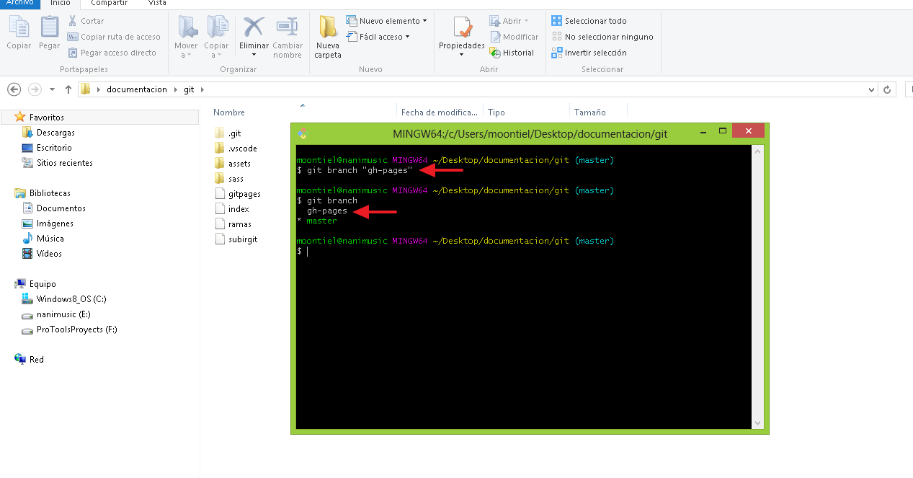
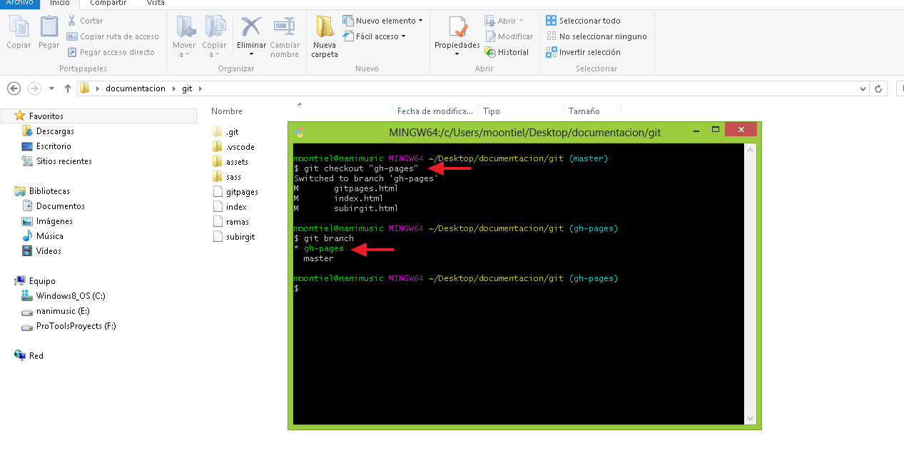
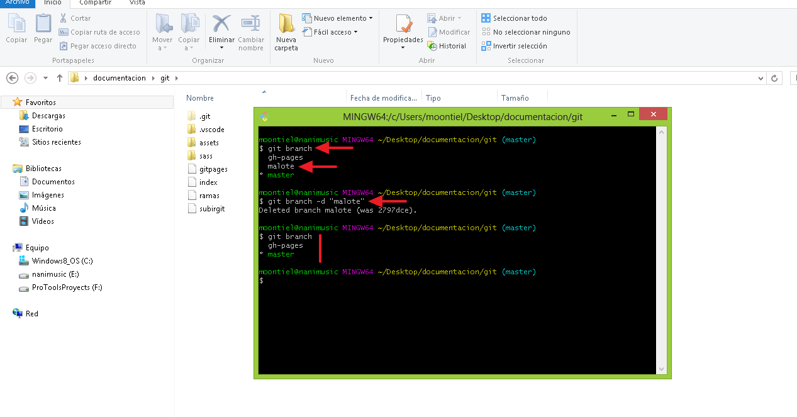

04. Git Branch
Las ramas nos permiten dividir nuestro proyecto en secciones pequeñas las cuales pueden ser trabajadas por diferentes desarrolladores. En este apartado varemos como crear, renombrar, eliminar e interatuar entre ellas.
01. Git branch: Conocer las ramas

02. Git branch "nombre rama": Crear rama

03. Git checkout "nombre rama": Cambiar entre ramas

04. Git branch -d "nombre rama": Eliminar una rama

05. Git branch -m "old name" "new name": Renombrar una rama

End Git Branch